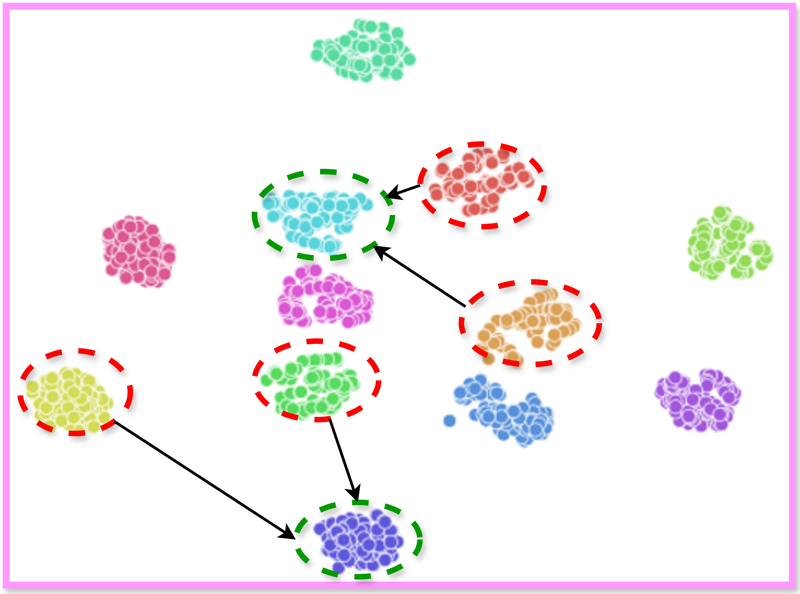
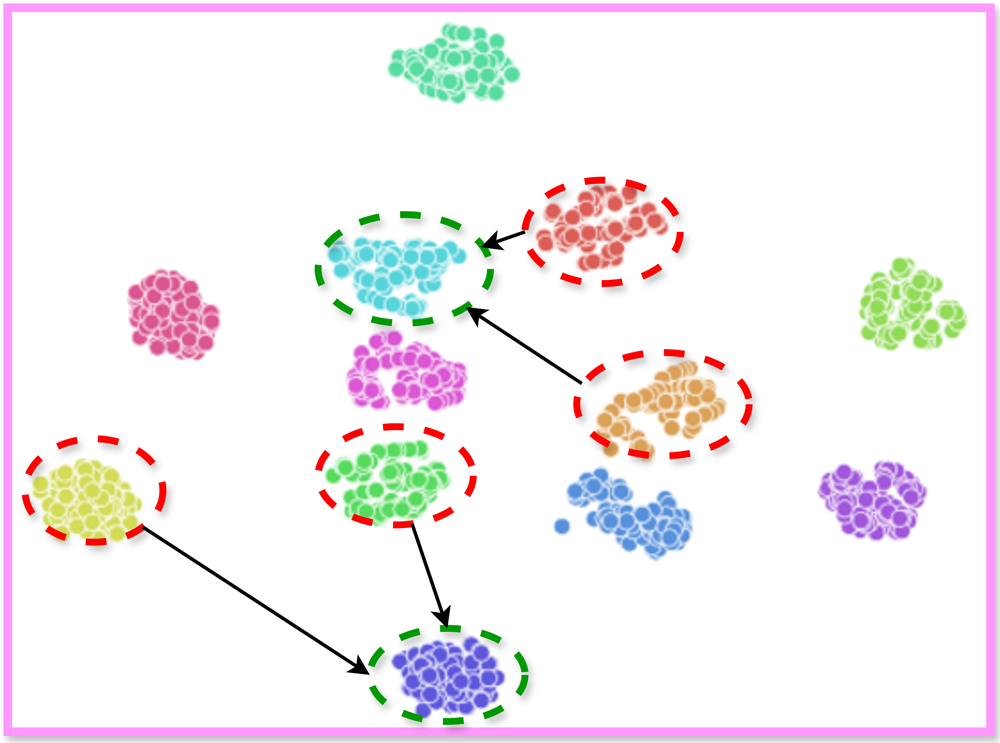

GaitCrafter: Diffusion Model for Biometric Preserving Gait Synthesis
1 Center for Research in Computer Vision, University of Central Florida
Abstract
GaitCrafter is a diffusion-based framework for synthesizing realistic silhouette-domain gait sequences with identity preservation and controllable covariates (clothing, baggage, view). Incorporating synthetic samples improves recognition in low-label and privacy-constrained settings, and mixing identity tokens produces novel, consistent identities useful for training.
Method Diagram

Results
1) Generated Gait Sequences (30-frame cycles)
2) Controllable Covariates (View / Clothing / Baggage)
3) Quantitative Results (CASIA-B, 100%)
4) Open-Set (20% IDs)
5) Identity Preservation & Novel IDs (t-SNE)
 

6) Reverse Diffusion Process

7) Multi-seed Variants per ID

BibTeX
@inproceedings{mitra2025gaitcrafter,
title = {GaitCrafter: Diffusion Model for Biometric Preserving Gait Synthesis},
author = {Mitra, Sirshapan and Rawat, Yogesh S.},
booktitle = {Proceedings of the IEEE/CVF International Conference on Computer Vision (ICCV)},
year = {2025}
}